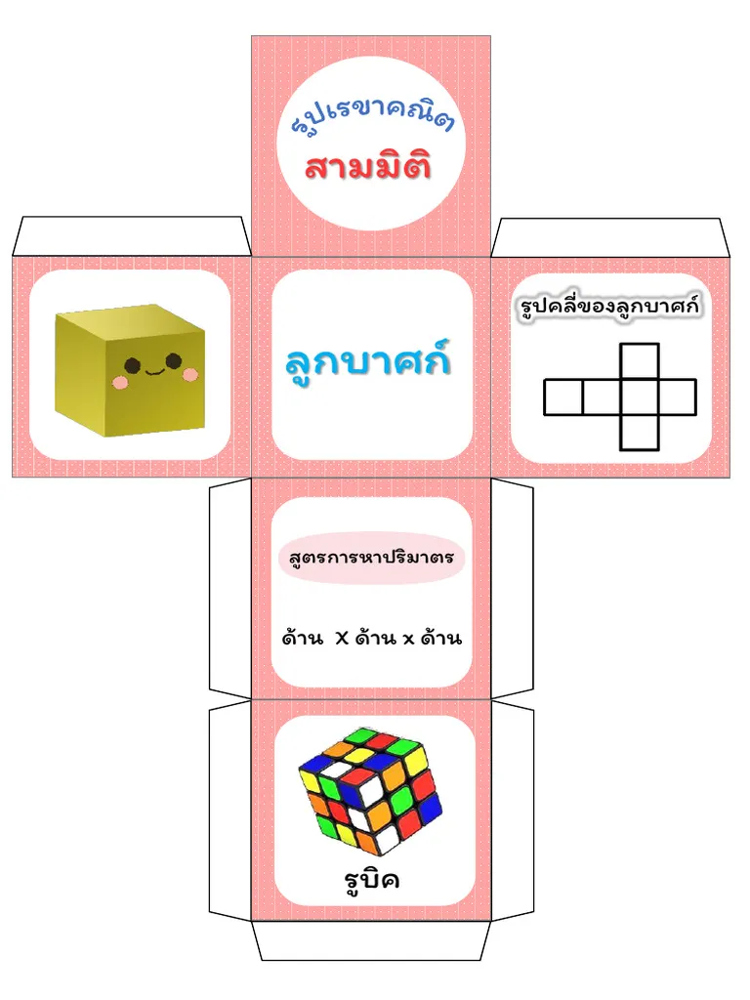

การหาระยะทแยงมุมภายในกล่องทรงสี่เหลี่ยม ทำได้โดยการใช้ทฤษฎีบทพีทาโกรัสสองต่อ เริ่มจากการหาเส้นทแยงมุมของฐาน แล้วนำผลลัพธ์ไปคิดต่อกับความสูงของกล่อง ในทรงกรวยและพีระมิด ความสูงตรง ความสูงเอียง และระยะจากจุดศูนย์กลางไปยังขอบฐาน จะประกอบกันเป็นรูปสามเหลี่ยมมุมฉากเสมอ.